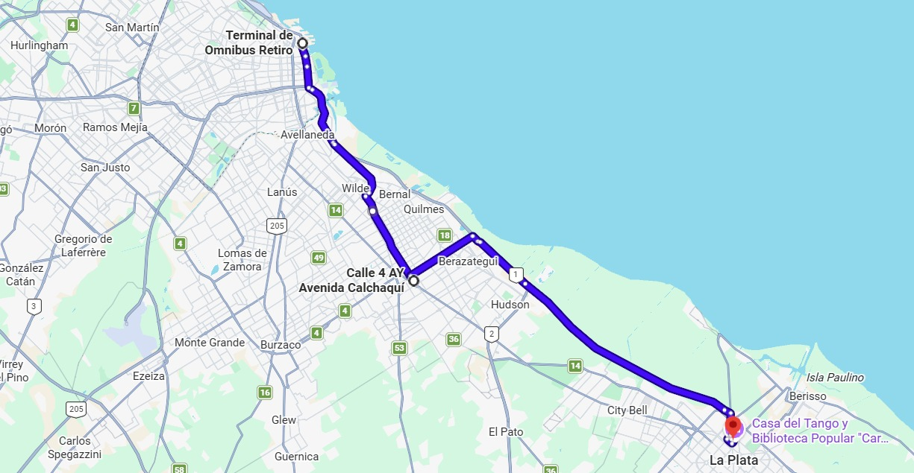

Terminal de Retiro
Punto de Partida
Av. Dr. José María Ramos Mejía 1680, CABA.
Plataformas asignadas de la 1 a la 5.
Cuenta con boletería física accesibilizada y personal de asistencia disponible las 24 horas.
Terminal Retiro - La Plata / Recorridos
El micro inicia en la Terminal de Retiro, toma la Avenida Castillo para ingresar directamente a la Autopista Dr. Ricardo Balbín (Autopista Buenos Aires - La Plata). Realiza un único desvío regulado a la altura del Cruce Varela para el ascenso/descenso de pasajeros, y retoma la autopista hasta el ingreso por la Av. 120 en la ciudad de La Plata, finalizando en la Terminal de Ómnibus.
Tiempo estimado:
1 hora y 10 minutos
* Bajo condiciones normales de tránsito.
Punto de Partida
Av. Dr. José María Ramos Mejía 1680, CABA.
Plataformas asignadas de la 1 a la 5.
Cuenta con boletería física accesibilizada y personal de asistencia disponible las 24 horas.
Cruce Varela
Av. Calchaquí y RP 4, Florencio Varela.
Punto estratégico de conexión con el sur del Gran Buenos Aires. Cuenta con parador techado, refugio iluminado y rampas de acceso a nivel de la calzada.
Destino Final
Calle 42 entre 3 y 4,
La Plata.
Plataformas de arribo de la 12 a la 15. Conexión inmediata con líneas de colectivos urbanos de La Plata y estaciones de taxi adaptadas.

¿Tenés alguna consulta sobre los puntos de ascenso o las paradas intermedias de nuestro servicio?